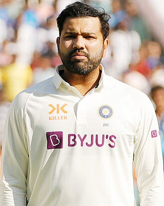

sharma in 2023 at the 75 years of friendship through cricket event
personal information
full name:rohit gurunath sharma
born:30 april 1987(age 37) nagpur,maharashtra,india
nickname:hitman,ro,shana
height:1.74 m(5 ft 9 in)
batting:right-handed
bowling:right-arm off break top-order batter
role:top-order batter
international information
national side:india(2007-present)
Test debut (cap 280):6 November 2013 v West Indies
Last Test: 9 March 2024 v England
ODI debut (cap 168):23 June 2007 v Ireland
Last ODI:19 November 2023 v Australia
ODI shirt no.45 (formerly 77)
T20I debut (cap 17):9 September 2007 v England
Last T20I:9 June 2024 v Pakistan
T20I shirt no.45 (formerly 77)
career statistics
| competition |
test |
odi |
fc |
la |
| matches |
59 |
262 |
120 |
333 |
| runs scored |
4,137 |
10,709 |
9,123 |
12,951 |
| batting average |
45.46 |
49.12 |
52.73 |
46.75 |
| 100s/50s |
12/17 |
31/55 |
29/37 |
34/68 |
| top score |
212 |
264 |
309 |
264 |
| balls bowled |
383 |
598 |
2,153 |
1,372 |
| wickets |
2 |
9 |
24 |
31 |
| bowling average |
112.0 |
58.00 |
48.08 |
37.70 |
| 5 wickets in innings |
0 |
0 |
0 |
0 |
| 10 wickets in match |
0 |
0 |
0 |
0 |
| best bowling |
1/26 |
2/27 |
4/41 |
4/28 |
| catches/stumpings |
60/- |
93/- |
104/- |
117/- |
haii
ds